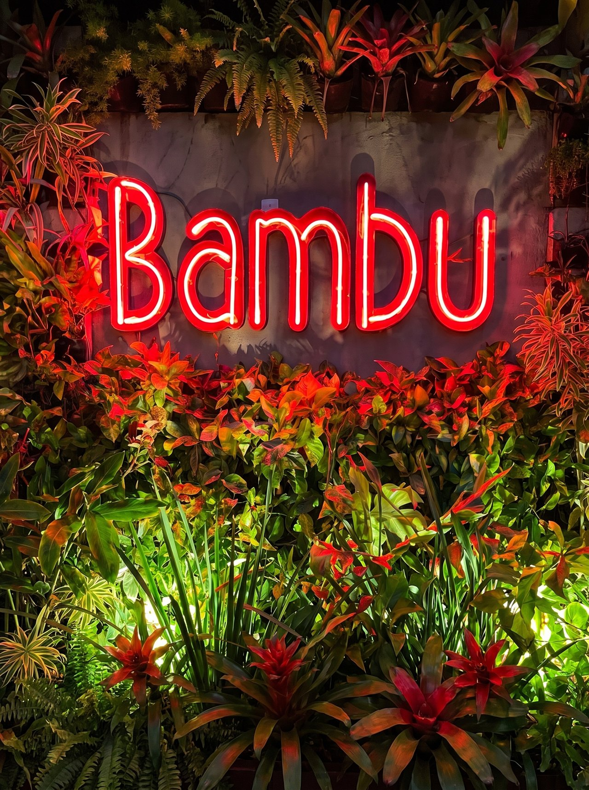
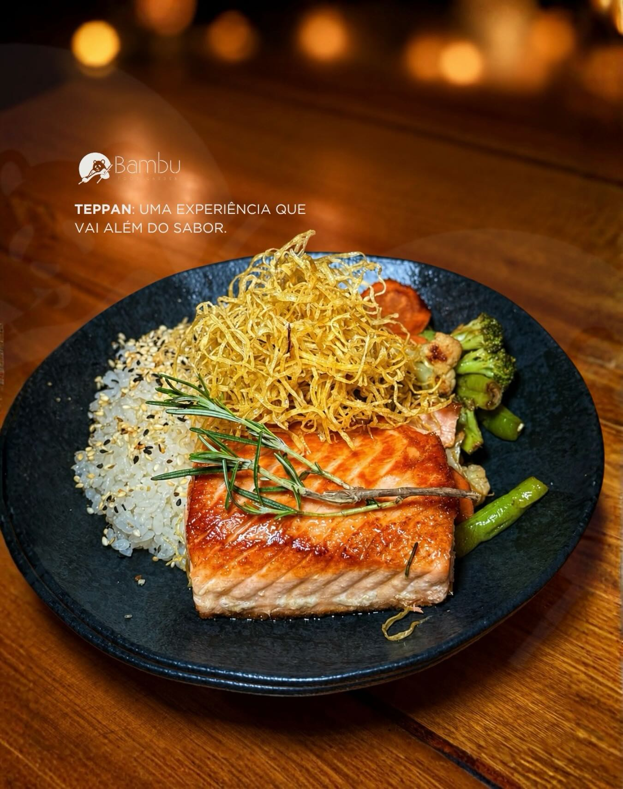
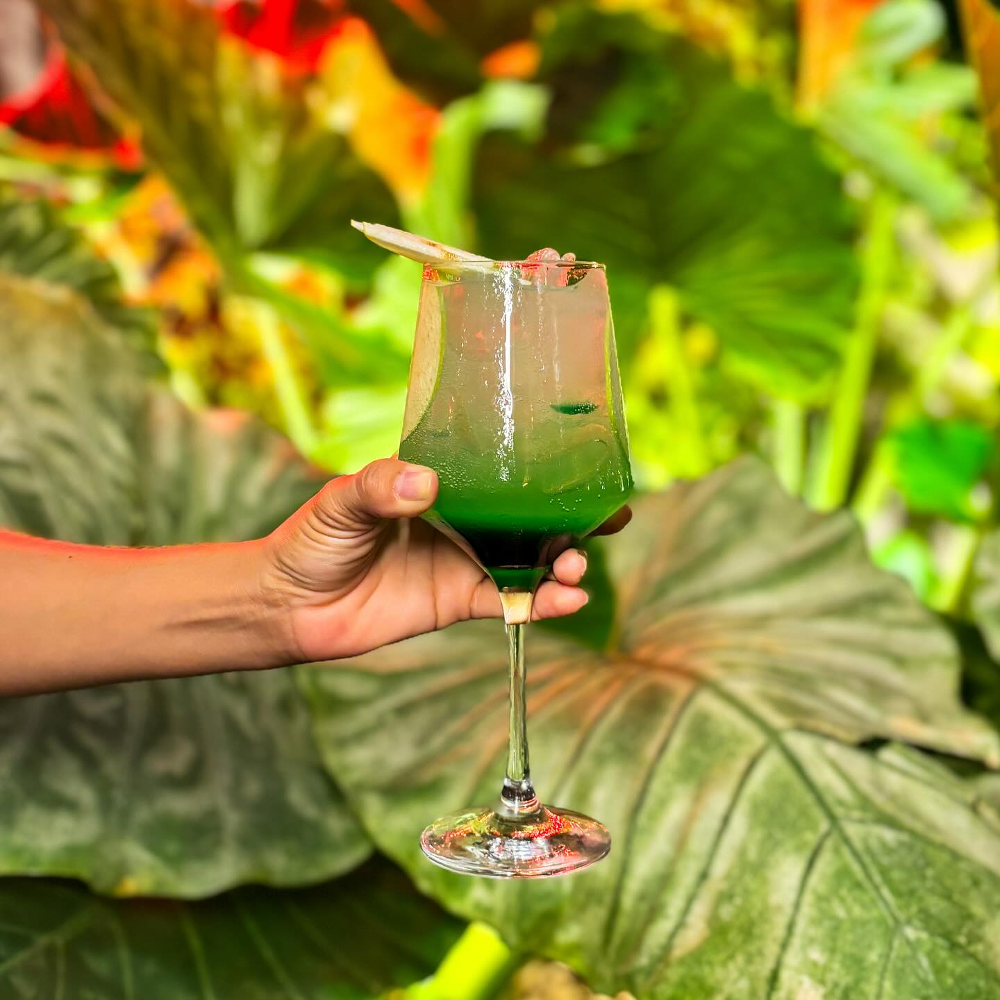

Escolhas para diferentes momentos e paladares.

Gastronomia · ambiente · encontros
Bambu Food Garden
Uma experiência gastronômica
para ser lembrada.
Crateús · Ceará
01
Um jardim de sabores,
luz e bons encontros.
ExperiênciaO Bambu
Mais do que uma refeição.
Uma experiência.
Um espaço pensado para transformar encontros em momentos especiais — reunindo gastronomia diversificada, ambiente sofisticado e música ao vivo.
Para celebrar, encontrar amigos ou dividir a mesa com a família, o Bambu convida você a viver a noite com tempo.

À mesa
Sabores que despertam os sentidos.
Peixes, camarões, sushi, massas, carnes, sobremesas e coquetéis compõem uma experiência feita para diferentes momentos e paladares.

O que torna especialDa mesa ao ambiente
Uma noite,
muitas experiências.
Um espaço agradável e sofisticado para encontros.
Música ao vivo em momentos especiais.
Conforto para compartilhar a experiência, com área infantil.
Drinks e coquetéis para acompanhar a noite.

Dentro & fora
O cenário também faz parte da experiência.
Ambientes climatizados, mesas externas e detalhes pensados para acolher encontros de todos os tamanhos.
Eventos no Bambu
Celebre
no Bambu.
Eventos especiais merecem um cenário à altura. Converse com nossa equipe sobre comemorações, encontros corporativos e momentos especiais em nosso espaço privativo.
Planejar meu evento Seu momento,
Seu momento,seu cenário.
Para compartilhar
Um lugar para
estar junto.
O Bambu também recebe famílias e crianças, com conforto, ambiente climatizado e área infantil para tornar o encontro agradável para todos.
Quem viveu, contaAvaliações de clientes
Avaliações de clientes
“Com certa folga, o melhor restaurante de Crateús.”Avaliação publicada por cliente
“Definitivamente o melhor restaurante de Crateús. Comida excelente e ambiente requintado.”Avaliação publicada por cliente
“Ambiente lindo, comida saborosa e atendimento excelente.”Avaliação publicada por cliente
5,0Comida · Serviço · Ambiente“O peixe ao molho de camarão muito bom. Recomendo a sobremesa de creme de abacaxi.” Gustavo Ferro · Local Guide ↗
4,7Comida · Serviço · Ambiente“Ambiente bem legal. Quando chegamos, fomos bem recebidos e atendidos. A comida saiu bem rápido e todas as coisas eram de muita qualidade.” Victor Gomes
Galeria
Momentos
à mesa.
Onde estamos
No coração
de Crateús.
Av. Tab. Edmar Lopes Martins, 207Planalto · Crateús — CE
63700-000
Todos os dias11h — 00h
Como chegar